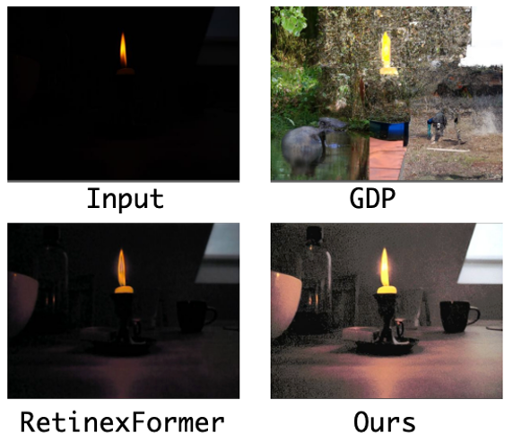
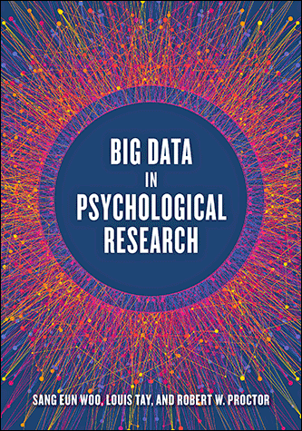
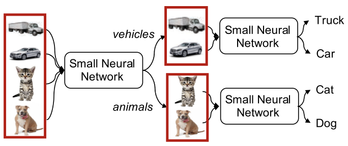

Research
I'm interested in computational photography and image processing, computer vision and deep learning.
|
|

|
Zero-Shot Low Light Image Enhancement with Diffusion Prior
Joshua Cho, Sara Aghajanzadeh, Zhen Zhu, David Forsyth
Arxiv, December 2024
|
|
|
Long Scale Error Control in Low Light Image and Video Enhancement Using Equivariance
Sara Aghajanzadeh,
David Forsyth
Arxiv, June 2022
|
|
|
|
Towards Robust Low Light Image Enhancement
Sara Aghajanzadeh,
David Forsyth
Arxiv, May 2022
|
|

|
Observing Human Behavior Through Worldwide Network Cameras, Big Data
in Psychological Research
Sara Aghajanzadeh, Andrew T. Jebb, Yifan Li, Yung-Hsiang Lu, George K. Thiruvathukal
American Psychological Association, 2020
|
|
|
Camera Placement Meeting Restrictions of Computer Vision
Sara Aghajanzadeh, Roopasree Naidu, Shuo-Han Chen, Caleb Tung, Abhinav Goel, George Thiruvathukal, Yung-Hsiang Lu
IEEE International Conference on Image Processing, 2020
|
|

|
Modular Neural Networks for Low-Power Image Classification on Embedded Devices
Abhinav Goel, Sara Aghajanzadeh, Caleb Tung, Shuo-Han Chen, George K. Thiru-
vathukal, Yung-Hsiang Lu
ACM Transactions on Design Automation of Electronic
Systems, October 2020
|
|
|
Low-Power Object Counting with Hierar-
chical Neural Networks
Abhinav Goel, Caleb Tung, Sara Aghajanzadeh, Isha Ghodgaonkar, Shreya Ghosh,
George K. Thiruvathukal, Yung-Hsiang Lu
ACM/IEEE International Symposium on Low Power Electron-
ics and Design, 2020
|
|
{kind=link}